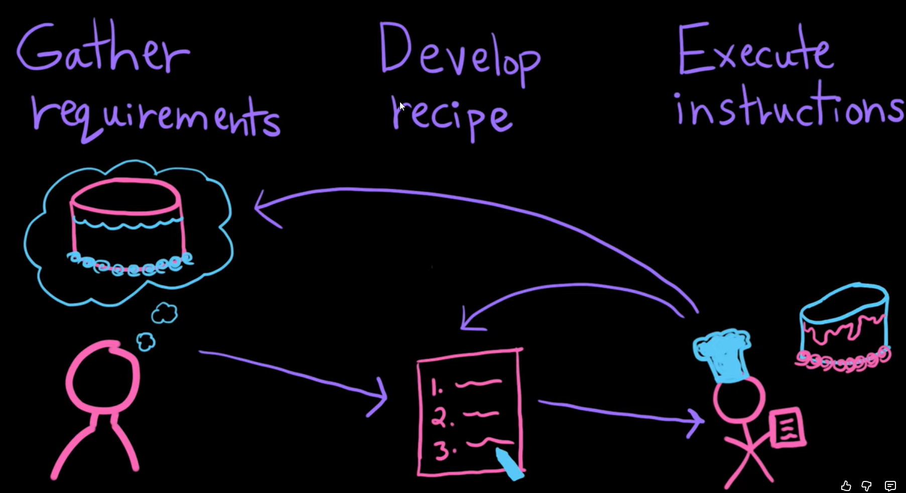

Programiranje
Najprej se vprašajmo, kaj je program. To je v izbranem programskem jeziku napisan algoritem. Algoritem, zapisan v programskem jeziku je množica ukazov, ki jih izvede računalnik z namenom, da reši nek problem.
Kaj je programiranje oz. kako poteka programiranje. Programiranje je proces, ki nas privede do delujočega programa.
V prvi fazi je kreativno reševanje problema; kateri problem rešujem, kaj želim da se zgodi, kakšne so zahteve naročnika; iskanje poti do rešitve; zapis ideje na list papirja in pretvorba v algoritmično obliko; zapis algoritma v formalni obliki recimo z diagramom poteka;
nato to prevedemo v ukaze programskega jezika, ki jih razume računalnik (ne čisto zares, ker »moramo« program še prevesti v računalniku razumljivo oblik);
nato te ukaze izvedemo oz. - še bolje - jih damo računalniku za izvajanje. In preverimo rezultat – program testiramo.
Rezultat ni vedno pravilen, zato se moramo pogosto vrniti v prejšnje korake in postopek ali del postopka ponavljamo (tudi večkrat) dokler ne dobimo pričakovanega rezultata.
Proces učenja programiranja poteka podobno kot proces učenja kakšnega športa ali glasbenega inštrumenta, kuhanja. Najbolj pomembna je vaja. Mnogo je uspešnih poizkusov. Še več neuspešnih poizkusov. Razmislekov. Opazovanja boljših programerjev. Učenja od drugih - boljših programerjev. Potrebna je vztrajnost.

vir: https://www.youtube.com/watch?v=5LeZflr8Zfs&t=132s
Poglej video: https://www.youtube.com/watch?v=5LeZflr8Zfs&t=132s
Vprašanja za algoritmi, progami, programski jeziki, programiranje:
Algoritem
Napiši vsaj eno definicijo za pojem algoritem!
Kako lahko zapišemo algoritem? Naštej tri primere in za vsakega zapiše en konkreten primer.
Kdo ali kaj uporablja algoritme. Opiši tri različne primere.
Kaj so lastnosti algoritmov. Naštej vsa tri ključne in jih opiši.
Programski jezik
Kaj je programski jezik?
Naštej nekaj programskih jezikov? Razporedi programske jezike po generacijah in za vsako navedi dve pozitivnih in dve negativni značilnosti.
Opiši, kako je potekal razvoj programskih jezikov. Kaj je bil cilj skozi leta? V kaj se je še razvil?
Čemu je namenjen programski jezik?
Kaj je vloga programskega jezika?
Kateri programski jezik razume procesor (CPU)?
Kateri programski jezik razume človek?
Obstaja programski jezik, ki ga razume tako računalnik kot tudi programer? Kateri?
Kaj moramo narediti, da računalnik (CPE) razume naš program napisan v programskem jeziku (C++, Java, C#, Python, …)?
Ali si lahko izmislimo svoj programski jezik? Razloži!
Kakšna je razlika med naravnimi in programskimi jeziki?
Kaj ima vsak naravni jezik? Ali obstajajo podobni elementi pri programskih jezikih?
Zakaj so pravila jezika (naravnega, programskega) pomembna?
Zakaj so nastali višji programski jeziki?
Kako napišemo nov programski jezik? Kaj potrebuje vsak programski jezik, da ga lahko izvaja računalnik?
Po kakšnem kriteriju ali kriterijih so razvrščeni programski jeziki v generacije?
Program
Naštejmo nekaj programov.
Kaj je program?
Kako zaženemo programe? Naštej nekaj različnih načinov zagona.
Kako je zgrajen računalnik? Naštej osnovne sestavne dela. Razporedi jih v tri glavne kategorije (Von Neumann). Posebej opiši enoto, ki je namenjena izvajanju ukazov.
Kje je shranjen program, ko je v izvajanju in kje ko ni v izvajanju?
Kakšna je naloga prevajalnika?
Kakšna je naloga zbirnika?
Razloži razliko v besedah assembly in assembler.
Ali so programi s končnico exe strojna koda ali ne? Kaj pomeni končnica exe (kratica)?
Programer
Kaj dela programer? Opiši s par stavki.
Kaj je cilj vseh programerjev?
S kakšnimi izzivi se ukvarjajo programerji?
Kaj je najbolj razburljivo pri službi (delu) programerja?
Kaj so težave programiranja?